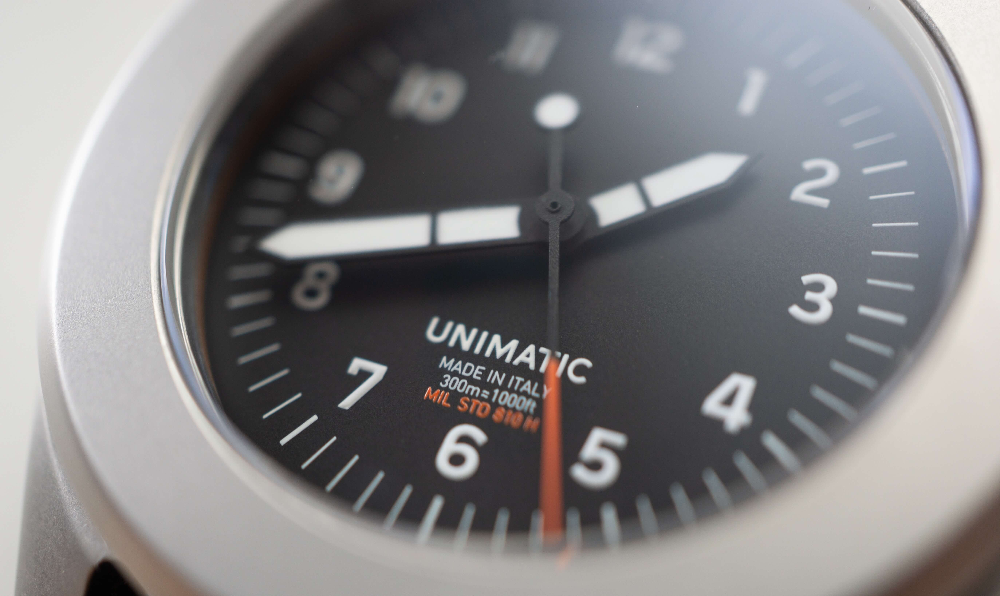
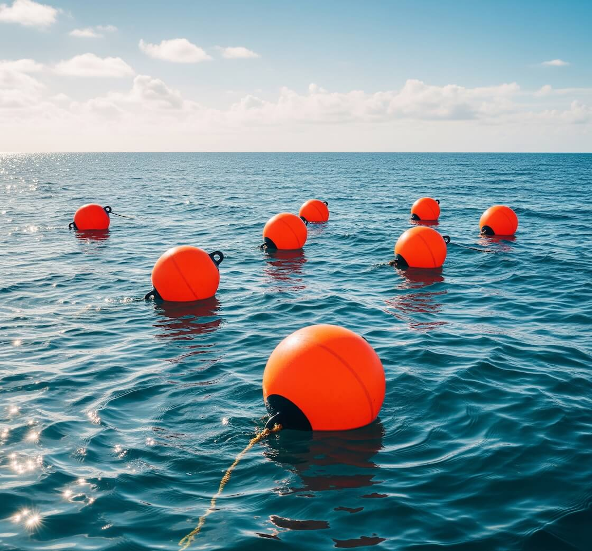
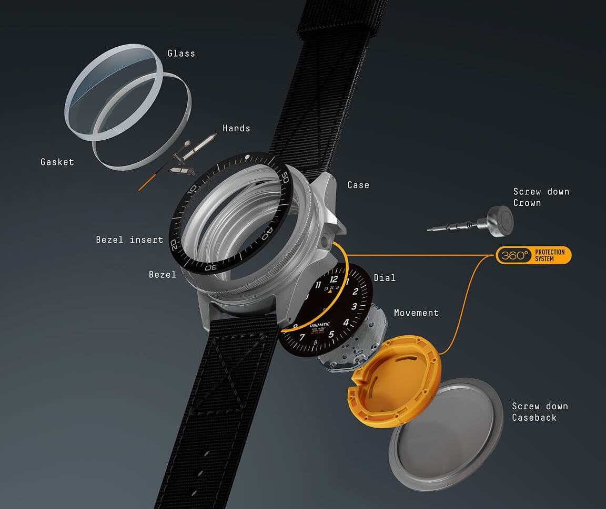

Why the Orange on This Unimatic Dial Is Not a Gimmick, But a Lesson In Product Design and Development
I finally pulled the trigger. After weeks of internal debate, reading and watching countless reviews, and probably an unhealthy amount of Instagram scrolling, I bought a Unimatic UT4. The clean design, the reliable quartz movement, sandblasted case, drilled lugs... UT4 just had everything I wanted. As I was waiting the shipping notification, I did what any watch enthusiast does: I went over the specs (again). And that is when I saw it, listed in the technical description of the dial: "International Orange".
 Nenad Pantelic • June 9, 2025
Nenad Pantelic • June 9, 2025

"International orange?! Lol, clever copywriting" was my first reaction. It sounded cool, a bit strange, definitely a step up from just plain "orange". I figured it was part of Unimatic's branding, a way to add a little extra flair, as the watch is military certified. Boy, was I wrong. Curiosity kicked-in, and I started researching online.
It turns out, "International Orange" is not just some fancy marketing term. It's a thing. A very specific, very important, and widespread thing in the world of product design and development.
A Color with a Purpose
My search revealed that International Orange is a standardized color used for safety and visibility. The Golden Gate Bridge, Aerospace components, NASA astronauts' jumpsuits, countless pieces of safety equipment, buoys, and rescue gear... they all share this hue.
There are actually multiple shades officially recognized as "International Orange":
Aerospace Orange: This is the one we often see on astronaut flight suits and parts of rockets or test aircraft. It's engineered for maximum visibility against the sky or the darkness of space.
Golden Gate Bridge International Orange: The Golden Gate Bridge is painted a specific shade of international orange that is lighter than the military standard but darker than the aerospace version to improve visibility of the bridge.
Engineering Orange: Similar to Aerospace Orange, often used for general engineering applications where high visibility is crucial.
Color representations
Aerospace Orange
#FF4F00
Golden Gate Bridge International Orange
#F04A00
Engineering Orange
#BA160C
The core idea behind International Orange is being able to stand out. It contrasts with a wide range of backgrounds: blue sky, green foliage, grey concrete, even the dark vast areas of the ocean or space. This makes objects painted in this color easier to spot, especially from a distance or in difficult conditions.
The choice of International Orange is never about aesthetics. It is about function, safety, and in some cases about saving lives.

This hue plays a critical role in aviation, maritime applications, industrial machinery, search and rescue operations, and more.
From the moment I read all of this, that orange accents on my incoming Unimatic UT4 felt less like a random artistic choice, and more like a nod to history of functional design.
The Clear Intention Behind the Decision
This brings me back to Unimatic. I already had two of their models, and I was familiar with the fact that the founders, Giovanni Moro and Simone Nunziato, both graduated from Politecnico di Milano, which is a design school. This means they are formally trained in the principles of design.
So, their choice of International Orange for the UT4 clicked into place. It was not just "a nice orange." It was an intentional decision, most likely influenced by their understanding of color theory, CMF design (color, material, finish), and the functional heritage of some colors and hues.
I really feel they were putting layers of considered design into each element of the Toolwatch collection.

I think it is one thing to appreciate a product for its surface-level aesthetics. But it is another thing to understand that even small details, like the exact shade of orange on the dial, comes from a deep knowledge and respect for design principles. This speaks volumes about their dedication, their attention to detail, and their ability to implement theory and the heritage in the real-life products they offer.
Still not convinced? Then take a look at dial numerals, specifically the "flat four" and "hooked seven." Does the style look familiar? Here is a hint: The Dirty Dozen.
It's All in the Details
I clearly remember that even before my Unimatic UT4 arrived, my appreciation for it had already grown greatly. Today I wear it often. The UT4 reminds me how I discovered this cool mashup of history, safety, visibility, and design. All thanks to that one line of text in a PDF spec sheet about International Orange.
And it is a proof that Giovanni and Simone truly know their stuff. Well played, Unimatic. Well played.